Présentation du serveur
LiberCraft est un serveur Minecraft Pvp-Faction moddé développé en 1.7.10. Créé en 2024, le serveur est à l'origine un serveur Vanilla 1.8.9. Depuis 2024, l'objectif du serveur est resté le même : créer un endroit sans Pay2Win, c'est-à-dire un environnement dans lequel l'argent réel n'entre pas en compte dans les classements, étant donné qu'il n'y a aucun moyen d'obtenir des avantages en jeu contre de l'argent.
Le serveur se déroule dans un univers japonais durant la période Edo. Actuellement, des Vikings sont entrés sur le serveur afin d'envahir le Japon. Ces deux univers s'associent ainsi avec des événements tournés sur ces deux mondes. Vous pouvez ainsi obtenir une armure d'évènement « Viking » (équivalente à l'armure en Malachite).
Le Launcher
Vous pouvez trouver le lien de téléchargement du launcher directement sur le Discord.
Le launcher va installer LiberCraft ici : %appdata%\.libercraft. Vous pouvez ajouter un texture pack ou régler le gamma au maximum dans le fichier « option.txt ».
Afin de pouvoir jouer, vous devez inscrire votre pseudo et lancer le jeu (le premier lancement est plus long car le jeu s'installe). Pensez à ne pas changer les majuscules de votre pseudo — vous ne pourrez pas rejoindre le serveur avec un pseudo différent (par exemple, avec le pseudo « Steve » vous ne pourrez pas rejoindre le serveur avec le pseudo « steve »).
Enfin, lors de votre première connexion sur le serveur, vous allez devoir créer un mot de passe avec la commande /register [mot de passe] [mot de passe]. Pensez à vous en souvenir afin de pouvoir vous reconnecter ensuite.
Le Gameplay
Les minerais
L'Azurite
L'Azurite est le premier minerai du serveur. Il est assez simple à trouver. Plus puissant que le diamant, vous pouvez combattre sans risque avec ! Il est trouvable à partir de la couche 16. Vous pouvez également obtenir de l'Azurite dans les minerais aléatoires.
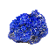
Azurite
Minerai brut
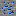
Minerai d'Azurite
Trouvable à partir de la couche 16
Bloc d'Azurite
Version compressée
Le Lithium
Le Lithium est un minerai beaucoup plus rare que l'Azurite. Il permet de crafter pleins d'objets, notamment les machines. Il est trouvable à partir de la couche 6.
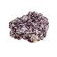
Lithium
Minerai brut
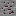
Minerai de Lithium
Trouvable à partir de la couche 6
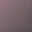
Bloc de Lithium
Version compressée
Le Malachite
Le Malachite est l'avant-dernier minerai du serveur. Il permet de crafter de nombreux objets rares. Il est uniquement trouvable dans les minerais aléatoires, ce qui le rend complexe à obtenir. Vous pouvez obtenir une pépite, un malachite ou un minerai directement dans les minerais aléatoires.
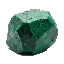
Malachite
Minerai brut
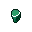
Pépite de Malachite
Obtenue via minerai aléatoire
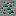
Minerai de Malachite
Trouvable lors d'évènements
Le Liberium
Enfin, le Liberium. Il s'agit du dernier minerai du jeu. Il est très rare et s'obtient uniquement grâce aux minerais aléatoires, où seules les pépites sont obtenables.
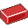
Lingot de Liberium
Ressource finale
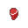
Pépite de Liberium
Uniquement via minerai aléatoire
Minerai aléatoire
Les minerais aléatoires sont trouvables à partir de la couche 6.
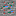
Minerai aléatoire
Peut contenir Azurite, Lithium, Malachite ou Liberium
Les outils
Outils en Azurite
L'Azurite permet de fabriquer les premiers outils moddés du serveur :
Pioche en Azurite
Plus puissante que la pioche en Diamant
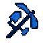
MultiTool en Azurite
Réunit tous les outils en un seul
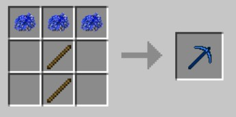
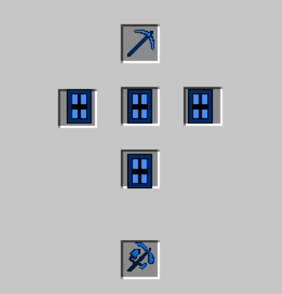
La Houe Magique
La Houe Magique est une houe qui gagne en niveau en réalisant des actions. Elle évolue ainsi en même temps que votre métier de farmer.
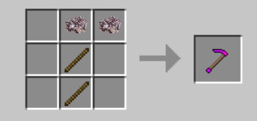
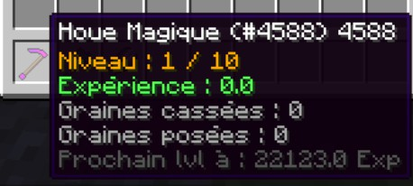
Barème d'expérience gagnée selon la culture récoltée :
| Culture | Expérience |
|---|---|
| Blé | 1.5 Exp |
| Patates | 2 Exp |
| Carottes | 2 Exp |
| Café | 5 Exp |
Évolution de la houe par niveau :
| Niveau | Effet |
|---|---|
| 1 | Houe vanilla sans propriété |
| 2 | Possibilité de replanter les graines en clic droit sur un bloc |
| 3 | Multiplie les objets obtenus par 1.25 |
| 4 | Casse les cultures en 3x3 blocs |
| 5 | Plante les cultures en 3x3 blocs |
| 6 | Multiplie les objets obtenus par 1.5 |
| 7 | Casse les cultures en 6x6 blocs |
| 8 | Plante les cultures en 6x6 blocs |
| 9 | Multiplie les objets obtenus par 1.75 |
| 10 | Multiplie les objets obtenus par 2 |
Les outils en Malachite
Le Malachite permet lui aussi d'obtenir deux outils très utiles :
| Outil | Craft | Effet |
|---|---|---|
| Marteau en Malachite | Se craft comme une pioche classique | Permet de casser les blocs rapidement en 3x3 |
| Cisaille en Malachite | Se craft comme des cisailles classiques | Permet de récupérer des spawners (durabilité de 5) |
Le PVP
LiberCraft apporte également un gameplay PVP custom ! L'objectif : créer un PVP plutôt orienté drop.
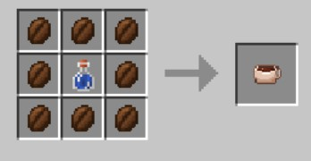
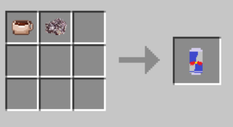
| Consommable | Effets | Cooldown |
|---|---|---|
| Café | Force II (6 min) · Vitesse II (6 min) · Résistance au feu (6 min) | 4 minutes |
| Boisson énergisante | Force II (8 min) · Vitesse II (8 min) · Résistance au feu (8 min) · Régénération (10 s) | 8 minutes |
Les armures faites pour le PVP sont les suivantes :
| Nom | Type de craft |
|---|---|
| L'Azurite | Vanilla |
| L'Azurite renforcé | Nécessite une machine de renforcement |
| Le Malachite | Vanilla |
| Le Liberium | Vanilla |
| Le Liberium renforcé | Nécessite une machine de renforcement |
Les bases et les pillages
Sur LiberCraft, il y a de nombreuses fonctionnalités pour créer une base ainsi que pour les pillages. Il existe de nombreux coffres moddés :
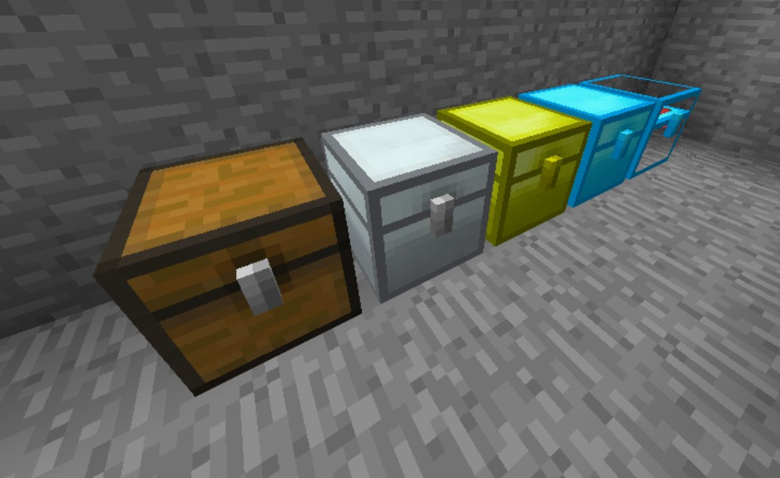
De plus, le système de claim de base a été retravaillé :
| Bloc | Résistance |
|---|---|
| L'obsidienne | Résiste à 4 explosions |
| L'Azurite Obsidienne | Résiste à 4 explosions de creeper superchargé |
| Slab en Azurite Obsidienne | — |
| Trap en Azurite Obsidienne | — |
Pour chercher des bases, vous pouvez utiliser ces techniques autorisées par le règlement :
| Technique | Description |
|---|---|
| Le radar à base | Vous permet de voir le % de chance qu'une base soit présente dans un rayon de 3x3 chunks |
| Le Show-FPS | Échap → Options vidéo → Détails → Voir les FPS |
| Le Debug Profile | Échap → Options vidéo → Détails → Debug Profile « ON » |
| « Bug » redstone | Bug redstone avec des barrières autorisé |
| « Bug » F5 | Se mettre en F5 pour voir à travers les blocs, autorisé |
Des tutos pour l'usage de toutes ces techniques sortiront sur les réseaux de LiberCraft !
Les Machines
LiberCraft compte pour le moment 2 machines qui vous permettent de crafter un meilleur équipement :
La Machine de renforcement
La Machine de renforcement permet de renforcer votre armure en Azurite et en Liberium.
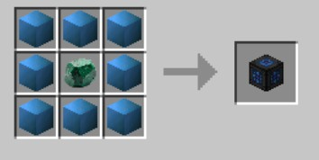
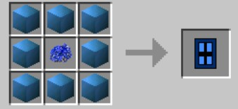
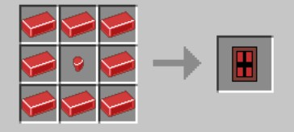
La Forge
La Forge permet de fabriquer l'armure runique. Cette armure permet d'améliorer votre expérience de farm en vous donnant des avantages.
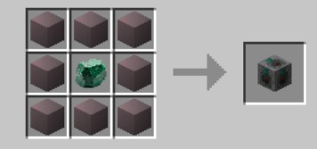
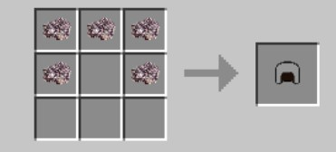
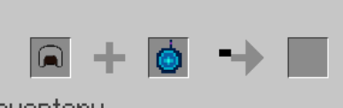
Propriétés de l'armure runique :
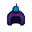
Radar à base
Affiche la probabilité de trouver une base dans un rayon de 3x3 chunks. Obtenu en tuant des Zombies (0,05% de chance).
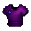
Plastron magnétique
Permet de marcher sur l'eau. Rune d'aimant obtenue en pêchant (0.76% de chance).
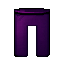
Jambière coupe-faim
Permet de ne plus avoir faim. Obtenue en cassant des nether-wart (0,05% de chance).
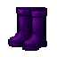
Bottes énergiques
Effet de vitesse 2. Rune d'énergie obtenue en cassant du café (1% de chance).
Les Warps
Il existe sur LiberCraft plusieurs warps qui vous permettent d'obtenir des ressources :
Le /warp HDV
Le warp HDV permet d'échanger des ressources avec un marchand viking. Les trades disponibles avec ce PNJ changeront au cours de la version.
Le /warp Samourai
Le warp Samouraï est un warp en Warzone. Il permet de combattre des Samouraï et d'obtenir des objets de trade. Ces objets permettent notamment d'obtenir l'armure Japon. Rendez-vous à ce warp avec un stuff correct, étant donné que les mobs sont assez puissants et que des joueurs peuvent venir vous PVP. Toutes les ressources ont 1% de chance d'être obtenues, excepté les « coins » qui ont 50% de chance d'être obtenus.
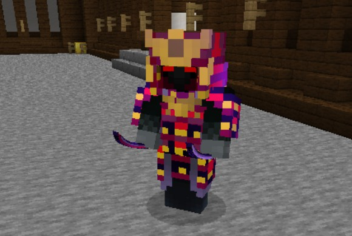
Voici un exemple du black market qui apparaît de manière régulière en warzone pour vous permettre d'échanger vos ressources contre de l'équipement :
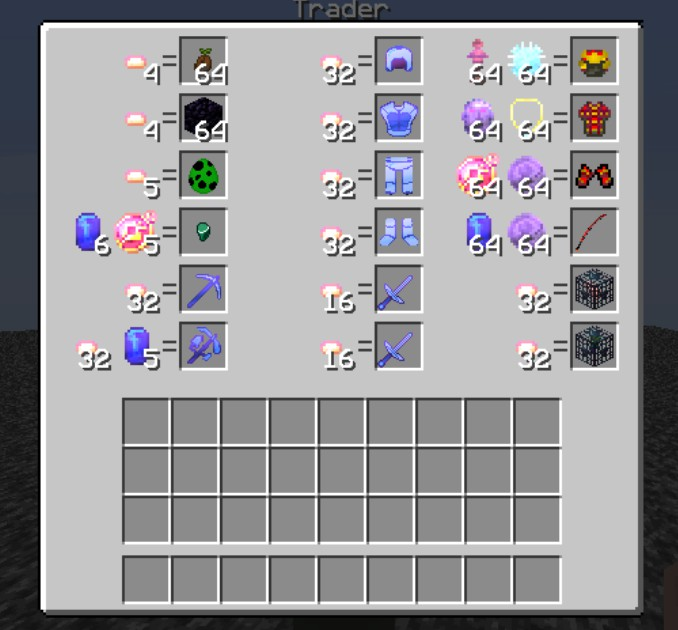
Les commandes & aides
Les bases
La map fait 25 000 x 25 000 blocs ; vous pouvez donc vous éloigner afin de créer votre base.
Commandes de téléportation :
| Commande | Description |
|---|---|
/spawn | Pour être téléporté au spawn du serveur |
/tpa [joueur] | Pour se téléporter à un joueur (/tpaccept pour accepter) |
/rtp | Pour se téléporter aléatoirement sur la carte (entre 1000 et 10 000) |
/menu | Permet d'avoir des informations sur le serveur |
/money | Permet de voir sa monnaie |
/sethome [nom] | Permet d'ajouter un point de téléportation |
/home [nom] | Permet de se téléporter à son point de téléportation |
/delhome [nom] | Permet de supprimer un point de téléportation |
/ah ou /hdv | Affiche l'hôtel des ventes (/ah sell [PRIX] pour vendre l'objet en main) |
/shop | Permet de vendre vos objets et d'acheter à un prix défini à l'avance |
Les commandes factions
| Commande | Description |
|---|---|
/f create [nom] | Permet de créer une faction |
/f invite add [pseudo] | Permet d'inviter quelqu'un dans sa faction |
/f join [faction] | Permet de rejoindre une faction |
/f leave | Permet de quitter sa faction |
/f disband | Permet de supprimer sa faction |
/f f [faction/joueur] | Permet d'avoir des informations sur une faction ou un joueur |
/f map (auto) | Affiche les claims autour de soi (« auto » actualise à chaque changement de chunk) |
/f ennemy [faction] | Ajoute une faction à sa liste d'ennemis — nécessaire pour pouvoir frapper un joueur dans ses claims, mais empêche l'usage de commandes (/sethome…) dans les claims ennemies |
/f claim | Permet de claim un chunk et de le protéger (seules les explosions font des dégâts au chunk) |
Les Tokens, grades, capes et kits
Le principe des tokens
Les tokens sont la seconde monnaie du serveur : ils permettent d'acquérir des grades, des kits ainsi que des capes. Les tokens n'ont pas été reset depuis la V1 en janvier 2024.
Les tokens s'obtiennent en réalisant des missions qui aident le serveur (et non avec de l'argent IRL) :
| Mission | Récompense |
|---|---|
| Voter (lien vers le salon Discord) | 50 tokens par vote (soit 2 600 tokens par jour) |
Lier votre compte Discord (commande /link en jeu) | 300 tokens + la cape « Tortue » |
| Invitation sur le Discord | 200 tokens par invitation |
Commandes utiles autour des tokens :
| Commande | Utilité |
|---|---|
/menu | Permet de voir vos tokens |
/token send [pseudo] | Permet d'envoyer vos tokens à un autre joueur |
/boutique | Permet d'échanger vos tokens contre des grades, kits, capes et sacs de récompenses |
Les grades
Joueur
- Pseudo en blanc
- 3 /home
- 9 slots à l'HDV
- Kit Joueur + Kit Nourriture
Chevalier
- Pseudo en vert
- 4 /home
- 11 slots à l'HDV
- /craft
- Kit Chevalier
Comte
- Pseudo en bleu
- 6 /home
- 14 slots à l'HDV
- /feed
- Kit Comte
Seigneur
- Pseudo en jaune
- 7 /home
- 17 slots à l'HDV
- /near · /repair
- Kit Seigneur
Empereur
- Pseudo en or
- 9 /home
- 20 slots à l'HDV
- /back · /ec
- Kit Empereur
Divin
- Pseudo en cyan
- 12 /home
- 24 slots à l'HDV
- /hat
- Kit Divin
Détail des kits par grade :
Kit Joueur
- Armure en diamant (P2 U3)
- Steak (x128)
- Pioche en diamant (Effi 2, U3)
Kit Nourriture
- Steak (x128)
Kit Chevalier
- Casque en diamant (P2 U3)
- Plastron en diamant (P3 U3)
- Jambière en diamant (P3 U3)
- Bottes en diamant (P2 U3)
- Épée en diamant (Sharp 5 U3)
- Café (x1)
Kit Comte
- Casque en Azurite (P1 U3)
- Plastron en diamant (P4 U3)
- Jambière en diamant (P4 U3)
- Bottes en diamant (P4 U3)
- Épée en Azurite (Sharp 1 U3)
- Café (x1)
Kit Seigneur
- Armure en Azurite (P2 U3)
- Épée en Azurite (Sharp 2 U3)
- Café (x1)
- Boisson énergisante (x1)
Kit Empereur
- Armure en Azurite (P3 U3)
- Épée en Azurite (Sharp 3 U3)
- Pomme en or (x2)
- Café (x1)
- Boisson énergisante (x1)
Kit Divin
- Armure en Azurite (P4 U3)
- Épée en Azurite (Sharp 5 U3)
- Pomme en or (x8)
- Boisson énergisante (x2)
- Café (x4)
Les Kits (boutique de tokens)
Chimiste
250 tokens- 22 potions de Heal II
Constructeur
275 tokens- Obsidienne (x576)
- Coffre en fer (x2)
Enchanteur
350 tokens- Bouteille d'expérience (x64)
- Livre (x16)
- Livre Sharpness III
- Livre Unbreaking III
- Livre Protection II
Pilleur
400 tokens- Briquet
- TNT (x16)
- Œufs de creeper (x3)
- Eau (x2)
- Bouton (x2)
- Trap (x2)
- Levier (x2)
Mineur
350 tokens- Charbon (x64)
- Redstone (x64)
- Lingots de fer (x32)
- Lingots d'or (x16)
- Diamant (x16)
- Azurite (x8)
- Minerais aléatoires (x8)
Les capes
LiberCraft possède un système de capes complet. Vous pouvez obtenir des capes de plusieurs manières :
▸ Avec les tokens (une boutique de capes existe)
▸ Capes spéciales (en participant à des évènements)
▸ Capes Partenaires (seule chose vendue sur le serveur contre de l'argent IRL)
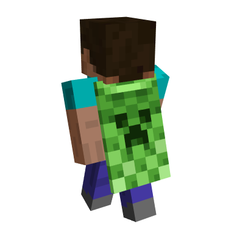
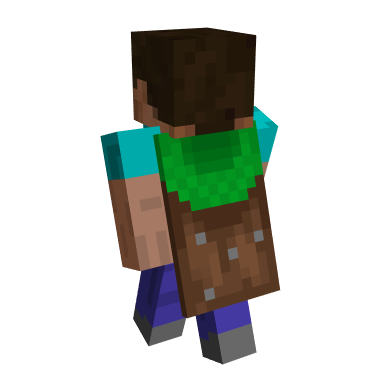
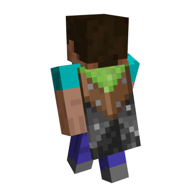
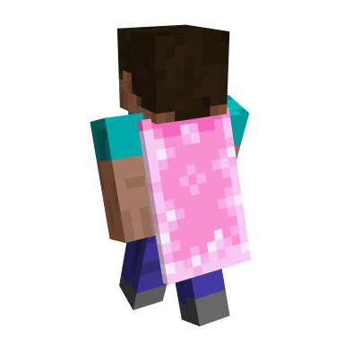
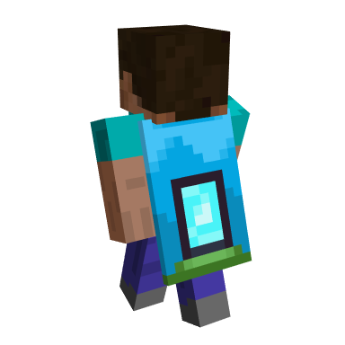
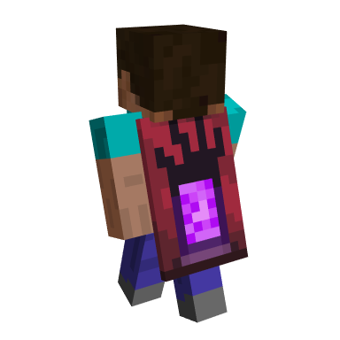
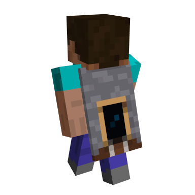
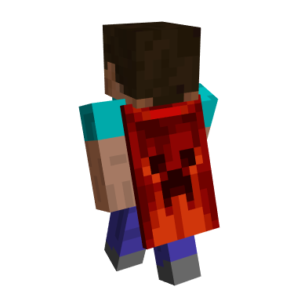
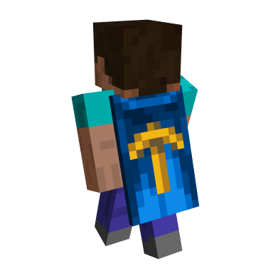
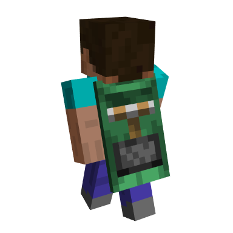
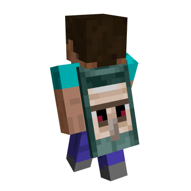
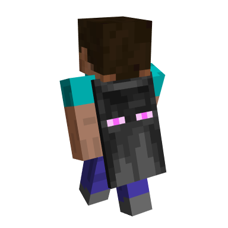
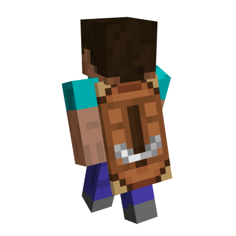
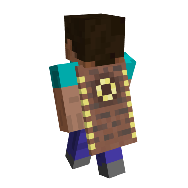
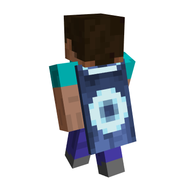
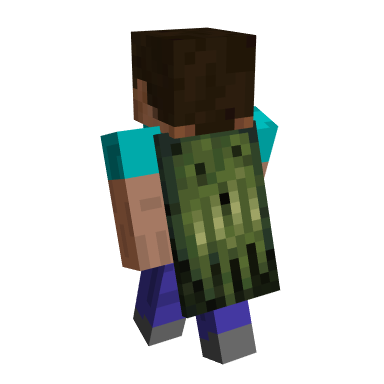
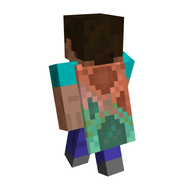
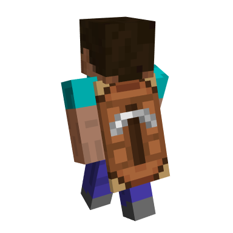
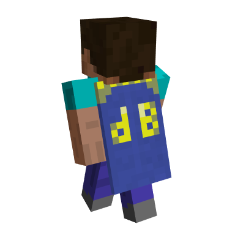
Trouvable dans la section capes du site !